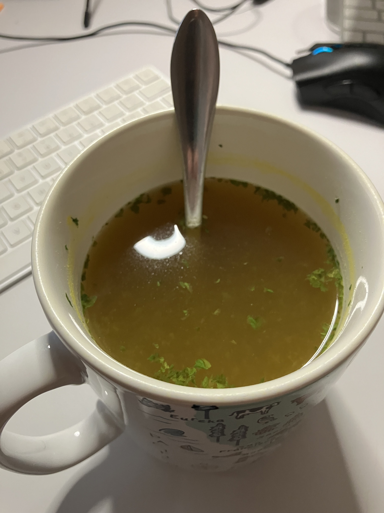

Broth In Less Than 10 Minutes
This is the easiest way to make broth that is low sodium and ready to consume in 10 minutes or less.
Ingredients:
- 4 packets of No Sodium Ox Bow bullion
- 4 cups water
- 1 tsp Bragg's Liquid Aminos
- 1/4 tsp garlic powder
- 1/4 tsp dried parsley flakes
Instructions
- Fill a bowl with 4 cups of water and microwave for 1 minue 30 seconds
- Stir in bullion, garlic powder, and parsley flakes
- Heat for another 4-5 minutes
- Stir in Liquid Aminos
Now you have a very basic broth that you can use as a soup starter or add to dishes that call for broth
